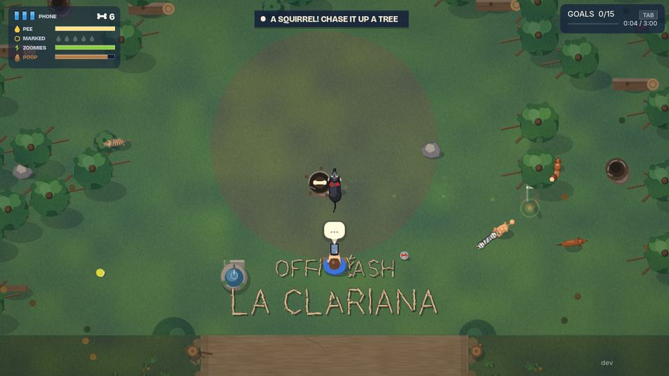

El Bosc
A winding woodland trail
A dirt forest path winding up through pines and mud patches where sticks wait beside the verge and phone reception vanishes completely. With no bars on the screen, your human actually looks up at the trees once in a while.
- Off-leash stop
- LA CLARIANA (Wooded clearing)
- Beat the clock
- Under 3:00
Screenshots



Goals (15)
- Mark 5 spots
- Have 4 good long sniffs
- Get the phone home without a scratch
- Get yourself home without a bump
- Get your business bagged
- Bring the ball back 3 times
- Bring Tofu the cat home
- Chase off 2 critters
- Have a good long drink
- Scarf down 2 dropped snacks
- Land an x3 trick combo
- Dig the pinecone out of the mud
- Spell LEASH
- Find the hidden pernil
- Beat the clock (under 3:00)